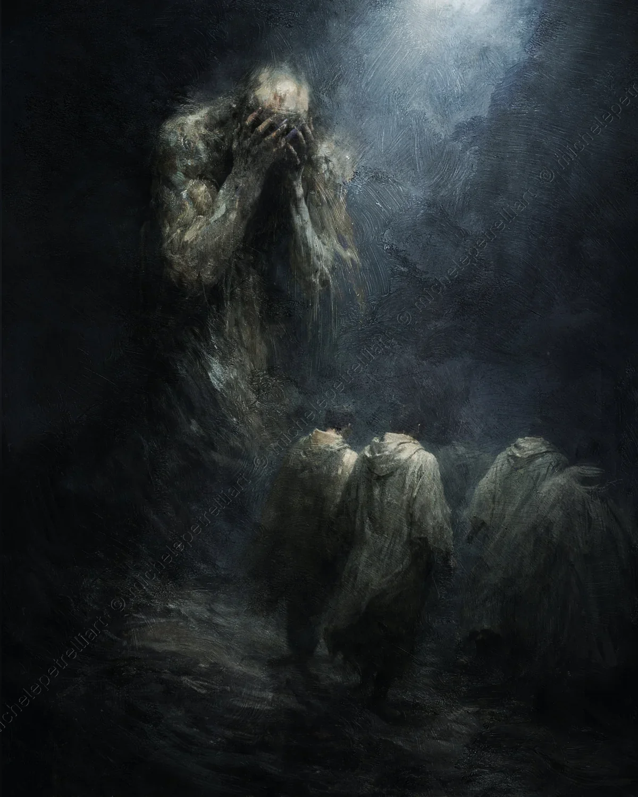

The image portrays the exact moment in which humanity — understood as a bond, empathy, and mutual recognition — withdraws, leaving behind a creature that its own conduct has rendered monstrous. Those who move away are not executioners, but the projection of a sense of belonging that no longer finds a foothold in a being that has severed every healthy interdependency.
The Alibi of Nature
The monster is the result of a life built on foundations of self-absolution. Phrases like "I am just made this way" or "It is my nature" are often used as shields to protect the ego from the weight of its own choices. However, appealing to one's nature to justify the absence of moral discipline is a paradox: if the individual does not choose, then they are not free; if they are not free, they are a biological automaton generating chaos within the social system.
Freedom as a Collision
The conviction of being able to act while ignoring interdependencies is a fatal miscalculation. Individual freedom does not exist in a vacuum; it constantly collides with the freedom of others. Ignoring this friction does not erase the consequences; it simply makes them unpredictable and destructive.
The Overlooked Calculation
The withdrawal of society — represented by the men walking toward the light, away from the creature's shadow — is the immune response of a system that can no longer integrate those who act out of blind personal necessity. One cannot disregard the other and expect the other to remain to bear witness to one's existence.